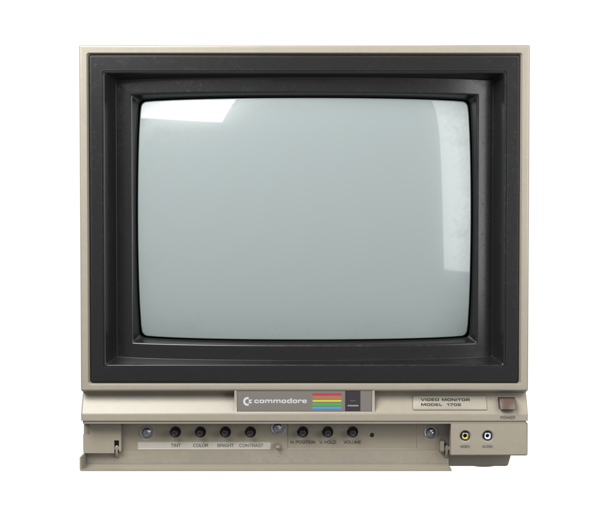

Click POWER on the monitor. Then: Space play/pause · ⌘→ ⌘← next/previous · ⌥⌘→ ⌥⌘← subtune · ⌘↑ ⌘↓ volume · ↑ ↓ Return pick · ⌥⌘S shuffle · ⇧⌘R surprise · ⌘. stop. Vim keys work too: h j k l L H + - s r x.